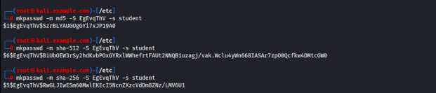
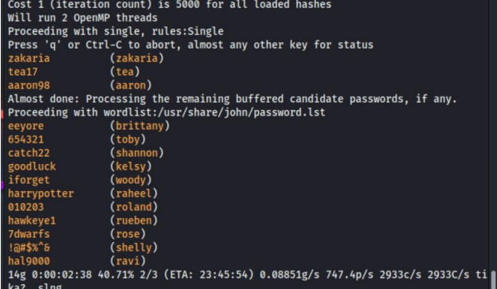
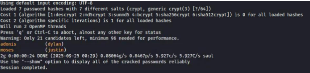

Cracking Linux Passwords: How Storage, Salting, and Attacks Interact
A three-part lab where I examined how Linux stores
passwords, then tried to recover them using offline brute-force and dictionary attacks.
~75 words: what ICA-4 was, the three parts, the tools (John the Ripper on Kali), and your headline result — 14 of 20 hashes cracked.    ~150 words: In Linux, password hashes are stored in a format like $6$salt$hash, where each part has a specific purpose. The $6$ represents the hashing algorithm, which is SHA-512 crypt. The salt is a randomly generated value added to a password before hashing, and the hash is the final encrypted-looking result stored instead of the actual password. When a user logs in, the system hashes the entered password using the same salt and compares it to the stored hash.
A salt is important because it adds randomness to the hashing process, making passwords more secure. Even if two users have the same password, their hashes will be different because they use different salts. This helps protect against attacks using precomputed hash tables, such as rainbow tables. Salts also make it harder for hackers to identify users with matching passwords. Overall, salting improves password security and makes large-scale password cracking more difficult. ~175 words: define each attack, then explain why the two methods cracked different numbers, and what that reveals about which passwords fall first. Use a real number (e.g. how fast the dictionary ran). ~125 words: which part of the CIA triad this threatens, and what makes a password survive (length, uniqueness, slow salted hashing). Cite the Chapter 6 slides here. ~75 words: what surprised you and what you'd recommend as a defense.Overview
The work
Analysis
How passwords are stored
Brute force versus dictionary attacks
Why it matters
Takeaway